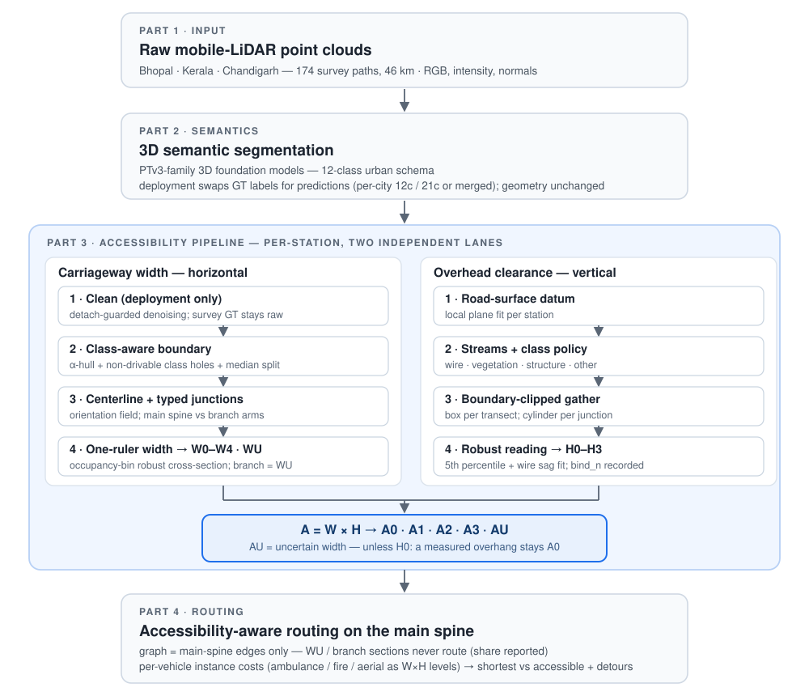
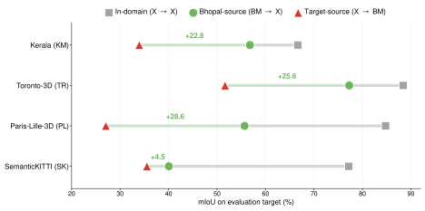
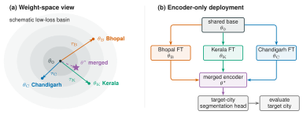
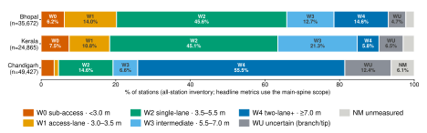
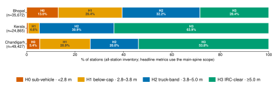
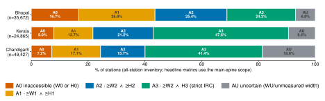
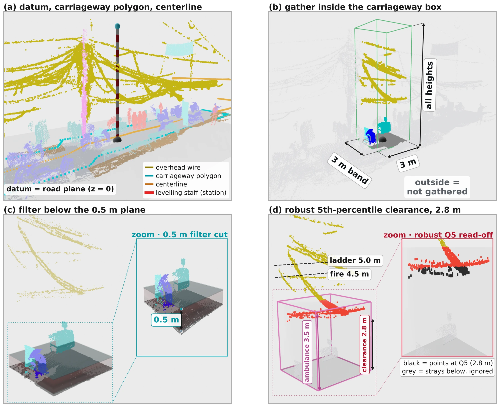
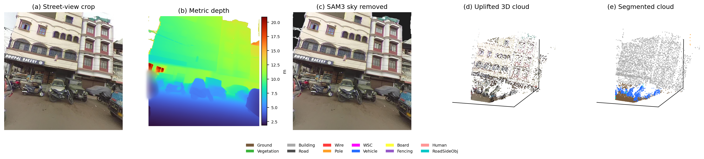

Video
A four-minute overview of the paper: the three surveyed sites, foundation-model segmentation and cross-city model merging, carriageway width and overhead clearance measured at every road station, the per-vehicle accessibility shares, and accessibility-gated routing on the Bhopal network. Every visual is the system's own output on real mobile-LiDAR survey data; narration is synthesised.
Abstract
Emergency-vehicle access in Indian cities is limited by narrow roads and overhead obstructions invisible to 2D navigation. We segment mobile-LiDAR clouds with 3D foundation models (Sonata, Concerto, Utonia), measure effective width and overhead clearance per road section, fuse them into accessibility classes, and route accessibility-aware across Bhopal, Kerala, and Chandigarh. Because point clouds face data-sharing restrictions while model weights do not, cities share models, not data: task-vector merging builds one deployable encoder per city, with no joint retraining.
Contributions
3D accessibility mapping
Road width and overhead clearance, measured jointly from foundation-model-segmented mobile LiDAR.Model merging as deployment
Cities share models, not data; the merged encoder deployed per city stays within 5 mIoU of city-specific fine-tuning.Accessibility-aware navigation
Shortest vs fastest vs accessible routes, and the detours physical constraints impose.
Method


Robust geometric measurement
Width and clearance are read directly from the segmented points by two independent pipelines that fuse only at the end — one ruler everywhere (the occupancy-bin robust cross-section), reported conservatively, because accessibility binds on the tightest point.
① Carriageway width
horizontal constraint · measured from the segmented road points② Overhead clearance
vertical constraint · measured from the above-road pointsStandards-based road classification
Classify the road first; map vehicles second.
Every 1.5 m section gets a width class (IRC lane standards) and a clearance class (IRC/CMVR limits), fused conservatively into one accessibility class. Vehicles are operating levels on this scale, not inputs.
| Class | Range | Vehicle |
|---|---|---|
| W0 sub-access | < 3.0 m | — |
| W1 access-lane | 3.0–3.5 m | ambulance |
| W2 single-lane | 3.5–5.5 m | fire, ladder |
| W3 intermediate | 5.5–7.0 m | — |
| W4 two-lane+ | ≥ 7.0 m | aerial setup |
| WU uncertain | branch / tip one-sided evidence · not routed | — |
| Class | Range | Vehicle |
|---|---|---|
| H0 sub-vehicle | < 2.8 m | — |
| H1 below-cap | 2.8–3.8 m | ambulance |
| H2 truck-band | 3.8–5.0 m | fire, ladder |
| H3 IRC-clear | ≥ 5.0 m | — |
| Class | Requires | Vehicle |
|---|---|---|
| A0 inaccessible | W0 or H0 | — |
| A1 access lane | ≥ W1 and ≥ H1 | ambulance |
| A2 single-lane | ≥ W2 and ≥ H2 | fire, ladder |
| A3 full IRC | ≥ W2 and H3 | strict IRC road; aerial setup also needs W4 |
| AU uncertain | width WU or unmeasured — unless H0 (a measured overhang stays A0) | — · excluded from routing |
③ Accessibility class = width × clearance
the two pipelines fuse per 1.5 m road sectionsection
min width, min clearance
Sources: IRC 86-2018 (lane widths), IRC 54-1974 (road clearance), IRC 32-1969 (overhead wires), CMVR Rule 93 (vehicle dimensions), IFC 2021 D105 (aerial setup).
Explore the classified scenes
Three classified ~30 m segments per city. 🎨 class colors ↔ RGB · 👆 identify a clicked point · 📏 measure a distance · 🌑 depth shading · ⛶ full screen.
Results
Figures and tables as they appear in the paper, with the paper's numbering. The deployment recipe first, then what it deploys: how much of each network every accessibility class can use, and the evidence behind each clearance reading.

| Source → Target | nc | Sonata | Concerto | Utonia | ||||||
|---|---|---|---|---|---|---|---|---|---|---|
| OA | mAcc | mIoU | OA | mAcc | mIoU | OA | mAcc | mIoU | ||
| Within-domain | ||||||||||
| BM → BM | 12 | 92.12 | 83.30 | 68.72 | 93.42 | 80.44 | 71.06 | 92.69 | 83.89 | 71.28 |
| KM → KM | 12 | 93.87 | 76.97 | 67.52 | 92.40 | 74.79 | 67.58 | 92.82 | 77.05 | 66.66 |
| CH → CH | 12 | 95.89 | 83.52 | 79.60 | 95.80 | 83.83 | 79.92 | 96.36 | 84.58 | 79.76 |
| TR → TR | 7 | 98.97 | 92.67 | 86.80 | 99.03 | 93.25 | 86.96 | 99.12 | 93.25 | 88.38 |
| PL → PL | 11 | 94.25 | 91.16 | 83.63 | 94.14 | 92.03 | 83.43 | 94.89 | 92.11 | 84.77 |
| SK → SK | 9 | 92.17 | 83.01 | 75.62 | 92.47 | 83.67 | 75.09 | 92.69 | 84.86 | 77.14 |
| Intra-Indian | ||||||||||
| BM → KM | 12 | 77.53 | 71.27 | 49.32 | 75.40 | 66.43 | 49.23 | 80.99 | 74.94 | 56.78 |
| KM → BM | 12 | 77.82 | 54.05 | 34.01 | 76.11 | 51.29 | 32.70 | 78.77 | 53.90 | 33.96 |
| BM → CH | 12 | 79.89 | 61.55 | 50.08 | 76.60 | 58.45 | 48.49 | 82.97 | 64.32 | 53.64 |
| CH → BM | 12 | 77.55 | 52.57 | 37.57 | 84.75 | 58.17 | 45.09 | 82.84 | 56.89 | 43.43 |
| Intra-Indian (same sensor) | ||||||||||
| KM → CH | 12 | 81.97 | 59.48 | 52.61 | 80.29 | 61.61 | 54.28 | 81.13 | 63.91 | 56.58 |
| CH → KM | 12 | 91.63 | 74.82 | 64.42 | 91.87 | 74.11 | 64.14 | 90.83 | 78.40 | 65.39 |
| Inter-region | ||||||||||
| BM → TR | 7 | 91.97 | 84.62 | 70.38 | 94.99 | 84.67 | 75.20 | 92.95 | 90.36 | 77.27 |
| TR → BM | 7 | 76.78 | 46.45 | 37.07 | 77.04 | 49.52 | 39.11 | 83.72 | 60.66 | 51.65 |
| BM → PL | 11 | 84.62 | 69.52 | 50.10 | 82.61 | 67.55 | 48.84 | 85.54 | 76.95 | 55.68 |
| PL → BM | 11 | 67.05 | 44.11 | 26.29 | 73.52 | 45.85 | 31.07 | 72.38 | 40.42 | 27.06 |
| BM → SK | 9 | 55.36 | 47.67 | 29.51 | 53.61 | 47.23 | 32.07 | 64.01 | 57.88 | 40.05 |
| SK → BM | 9 | 44.43 | 36.98 | 11.40 | 50.18 | 27.89 | 12.29 | 77.04 | 55.28 | 35.54 |

| Model | Bhopal | Kerala | Chandigarh | ||||||
|---|---|---|---|---|---|---|---|---|---|
| Merged | FT | Δ | Merged | FT | Δ | Merged | FT | Δ | |
| Sonata | 65.03 | 68.72 | −3.69 | 68.55 | 67.37 | +1.18 | 79.46 | 79.50 | −0.04 |
| Concerto(O)† | 68.74 | 68.10 | +0.64 | 66.63 | 63.57 | +3.06 | 78.61 | 78.88 | −0.27 |
| Utonia | 70.66 | 71.28 | −0.62 | 68.14 | 66.35 | +1.79 | 79.84 | 79.66 | +0.18 |
| Utonia universal (one encoder) | 61.21 | 71.28 | −10.07 | 68.04 | 66.35 | +1.69 | 78.61 | 79.66 | −1.05 |
| Utonia joint (BKC) | 69.80 | 71.28 | −1.48 | 75.73 | 66.35 | +9.38 | 80.62 | 79.66 | +0.96 |

(b) binding-clearance classes H0–H3
(c) accessibility classes A0–A3 (with AU)
| Accessible length (%) | A1 ambulance instance 3.0 / 3.5 m |
A2 fire-truck instance 3.5 / 4.5 m |
A3 aerial-appliance instance 3.5 / 5.0 m |
|---|---|---|---|
| Bhopal | 72.9 | 40.1 | 27.9 |
| Kerala | 90.9 | 64.4 | 54.2 |
| Chandigarh | 85.0 | 58.3 | 53.4 |

| Responsible returns behind a reading | 1–5 | 5–10 | 10–20 | 20–50 | 50+ |
|---|---|---|---|---|---|
| Median clearance error vs hand-measured ground truth (29 stations) | 0.10 m | 0.08 m | 0.04 m | 0.15 m | 0.13 m |
Live deployment: accessibility map & routing
The map opens on Bhopal in 🚑 Route mode, on the example from the paper's graphical abstract: the shortest path (388 m) is blocked for an ambulance, so the accessible route detours (720 m). Click two points for another pair, or pick another city. Also: 🧭 OSM ↔ LiDAR alignment · Categorize colours the network by W / H / A class.
Low-cost scalability: street-view uplift
The same pipeline runs on street-view imagery uplifted to metric 3D, validated against co-located Bhopal LiDAR. Pick a view below to inspect its uplift.

BibTeX
@article{anonymous2026overhead,
title = {Overhead clearance rather than carriageway width as the limit on the largest emergency vehicles:
multi-city mapping from mobile laser scanning by model merging},
author = {Anonymous},
year = {2026}
}